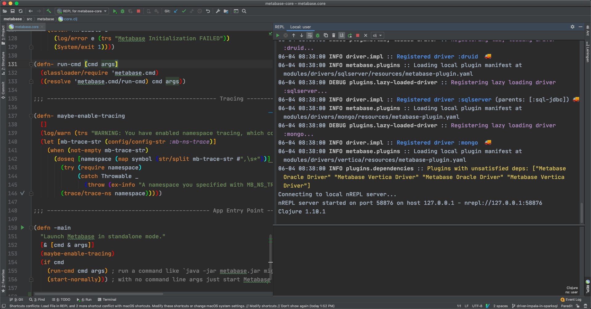

开发工具
Intellij IDEA + Cursive
安装 IDEA 社区版即可，并安装插件 Cursive。
Cursive 插件按键冲突
比如我会用组合键⌘ + [浏览代码，与 Cursive 插件的按键冲突。可以取消 Cursive 的这个组合键。
实践
Metabase
接触 Clojure 是因为 Metabase 这个项目 https://github.com/metabase/metabase 。以 Metabase 为例，说明如何调试 Clojure 项目。
Metabase 由前后端两部分组成，后端是由 Clojure 写的 REST API 项目。启动前端工程，需要在前端界面上触发 API 请求。
yarn build-hot
参考
- Metabase developers-guide https://github.com/metabase/metabase/blob/master/docs/developers-guide.md
REPL 调试 Clojure 项目
新建一个 Clojure REPL 配置。
展开右下角的 REPL 子窗口，Run REPL for metabase-core。（注意，此时，项目中的 clojure namespace 并没有实际加载。代码编辑区运行 Clojure 函数，会报错，Error: :namespace-not-found）

metabase.core.clj 是整个项目的入口文件。执行 Load File in REPL。插件自动把所有 metabase.core 的依赖加载进 REPL 中。
Load 成功。

入口函数-main并不会自动运行的。调用-main并发送函数到 REPL 中执行。
print 调试，改完代码即可生效。如下，加入打印变量函数，执行Load File in REPL/Sync Files in REPL/Send xxx to REPL让函数生效。
REPL 会阻塞
会有发送函数到 REPL 中执行，而没有反应的情况。需要注意，REPL 会阻塞。
(.join (server/instance))) Jetty Server 阻塞住当前线程。所以其他函数在 REPL 中被阻塞了。
Metabase 入口代码：
(defn- start-normally []
(log/info (trs "Starting Metabase in STANDALONE mode"))
(try
;; launch embedded webserver async
(server/start-web-server! handler/app)
;; run our initialization process
(init!)
;; Ok, now block forever while Jetty does its thing
(when (config/config-bool :mb-jetty-join)
(.join (server/instance)))
(catch Throwable e
(log/error e (trs "Metabase Initialization FAILED"))
(System/exit 1))))
(defn -main
"Launch Metabase in standalone mode."
[& [cmd & args]]
(maybe-enable-tracing)
(if cmd
(run-cmd cmd args) ; run a command like `java -jar metabase.jar migrate release-locks` or `lein run migrate release-locks`
(start-normally))) ; with no command line args just start Metabase normally
解决办法，就是不要让代码阻塞住当前线程、REPL。
参考：
- The Cursive REPL https://cursive-ide.com/userguide/repl.html
总结
REPL 的方式调试代码还是蛮新奇的，对我来说。
Last modified on 2020-06-04